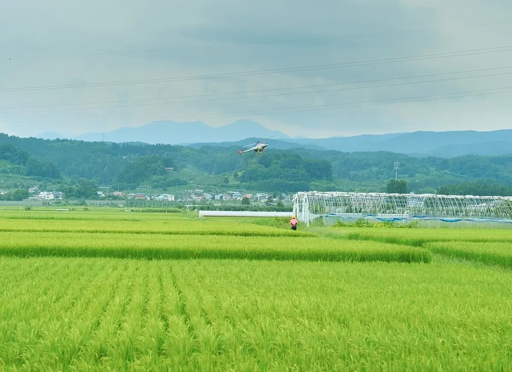
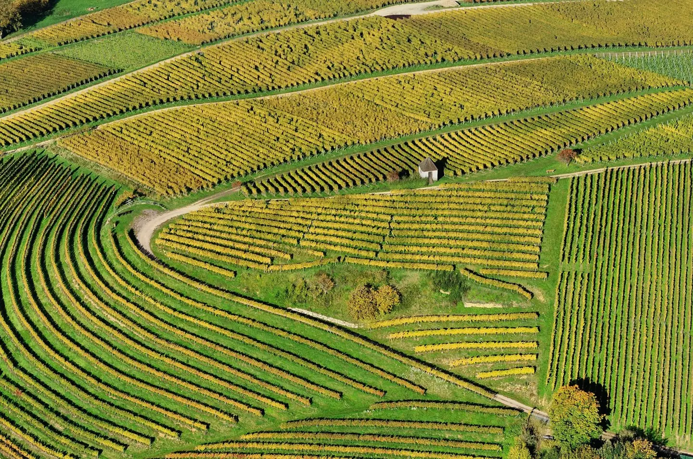

01
Çəkin
Dronu sahənin üstündən uçurun və ya telefonla xəstə görünən yarpağı yaxından çəkin. Multispektral sensor, peyk və kalibrləmə lazım deyil. Adi rəngli şəkil kifayətdir.

Sahə monitorinqi, sadə dildə
VisionX dronun və ya telefonun çəkdiyi adi şəkli sahənin sağlamlıq xəritəsinə çevirir. Problemi yayılmadan görürsünüz, dərmanı isə yalnız lazım olan yerə vurursunuz.
Kiçik fermerlərə icarə dron almadan xidmət kimi

Adi foto Sağlamlıq xəritəsiTelefonla diaqnoz dəstəklənən bitkilər
Problem
Xəstəlik, zərərverici və ya susuzluq sahənin bir küncündə başlayır. Fermer onu çox vaxt artıq yayılandan sonra görür. Nəticədə ya məhsulun bir hissəsi itir, ya da problemin yeri bilinmədiyi üçün dərman bütün sahəyə vurulur. Bu həm pul itkisidir, həm də torpağa və ətraf mühitə əlavə zərər.
Sahənin vəziyyətini bilməyin yolları
Necə işləyir
01
Dronu sahənin üstündən uçurun və ya telefonla xəstə görünən yarpağı yaxından çəkin. Multispektral sensor, peyk və kalibrləmə lazım deyil. Adi rəngli şəkil kifayətdir.

02
VisionX modeli şəkli saniyələr içində təhlil edir. Dron şəkli zonalara bölünmüş rəngli xəritəyə çevrilir. Yarpaq şəklində isə bitki və xəstəlik tanınır.
03
Telefonunuzda problemli zonaları və onların payını görürsünüz. Tətbiq problemin nə olduğunu və nə etmək lazım olduğunu azərbaycanca izah edir. Bütün sahəni gəzmirsiniz, yalnız qırmızı nöqtələrə gedirsiniz.

Dron və telefon
Dron sahənin hansı hissəsində problem olduğunu göstərir. Telefon isə o yerdə nə baş verdiyini söyləyir.
Missiya
Bərpa olunan torpaqlarda yeni sahələr salınır. Bu sahələrin ilk mövsümlərində hər itən hektar baha başa gəlir. Sahənin vəziyyətini görmək indiyədək yalnız böyük təsərrüfatların gücü çatan bahalı alətlərlə mümkün idi.
VisionX bu bilgini adi kamera ilə verir. Aqroparklar dron paketi və abunə ilə işləyir, dron ala bilməyən kiçik fermer isə xidməti icarə kimi alır. Bir dron bir neçə fermerə xidmət edir.
Məqsəd: problemi yayılmadan tutmaq, dərmanı yalnız lazım olan yerə vurmaq.
Kimlər üçün
Hansı tərəfdə olmağınızdan asılı olmayaraq bizə eyni yolla yazırsınız. Kim olduğunuzu deyin, sizə uyğun yolu göstərək.
Fermerlər və aqroparklar üçün analizə hazır dron. Uçuş marşrutu, kamera ayarları və ilk təlim daxildir.
Hər uçuşdan sonra xəritə, zona hesabatı və tövsiyələr. Mövsüm boyu sahənin dəyişməsini izləyin.
Dron almağa ehtiyac yoxdur. Operatorumuz sahənizi çəkir, nəticəni telefonunuzda alırsınız.
Kimlərlə işləyirik
Bizimlə işləyin
Fermerlər, aqroparklar, dron komandaları, aqronomlar, tədqiqatçılar. Sahənizi daha sadə və ucuz yolla izləmək istəyirsinizsə, bizə yazın.
və ya birbaşa e-poçt: info@visionx.az
Hamı üçün açıqdır
Sahənin şəklini gətirin. Saniyələr içində sağlamlıq xəritəsinə çevrildiyini görün.